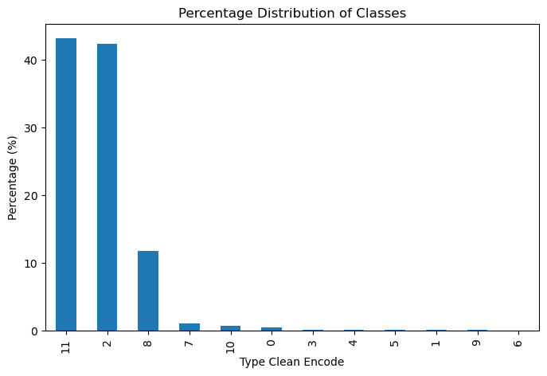
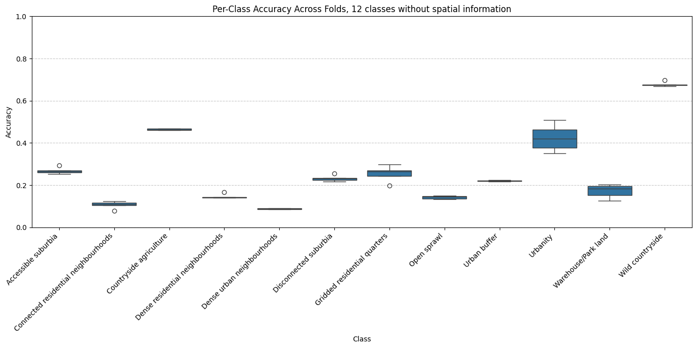
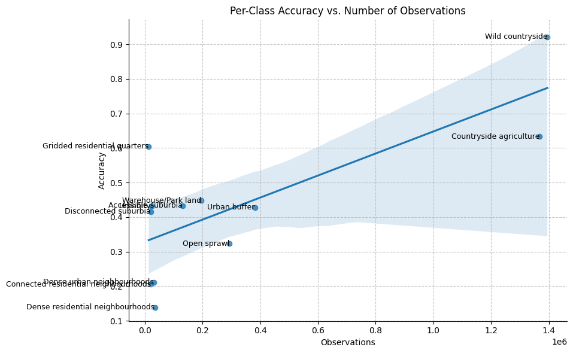
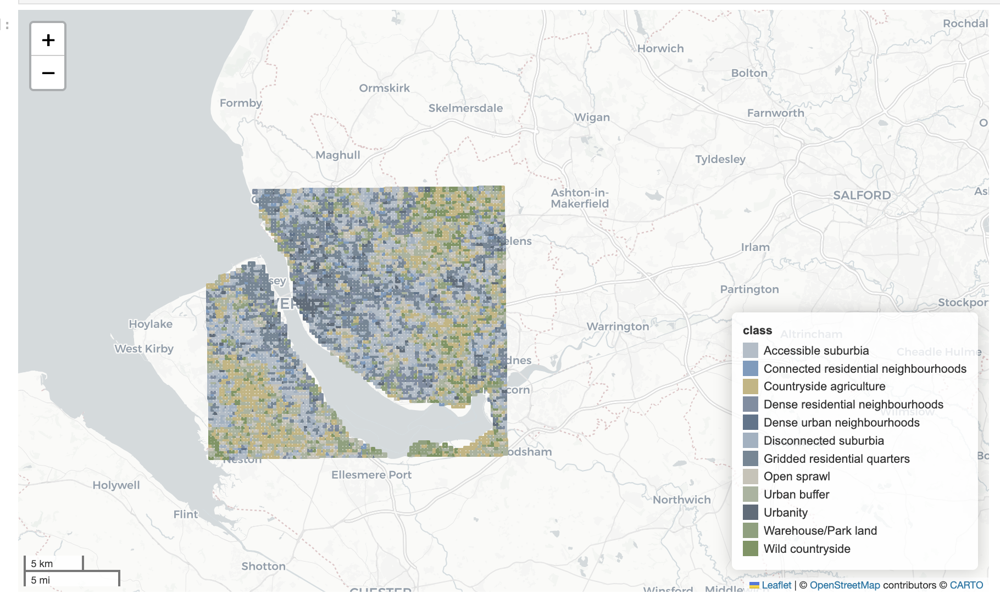

AI Model Development for Urban Fabric Segmentation
Executive Summary
Test and Verification Results: AI Model
This section expands on the Algorithm Design and Reference Data Selection sections, detailing the dataset and previous analyses leading to the final model. We discuss model performance in detail and present results of temporal predictions spanning 2016 to 2021.
Data
Satellite Imagery (Input)
Satellite image data used to train the XGBoost classifier was sourced from the GHS-composite-S2 R2020A dataset1, as detailed in the Reference Data Selection. This dataset is a global, cloud-free image composite derived from Sentinel-2 L1C data, covering January 2017 through December 2018. We utilised RGB bands at 10 metres per pixel resolution.
Temporal Change Prediction
Sentinel-2 satellite imagery covering 2016 to 2021 was acquired using the Google Earth Engine API through automated Python scripts (as described in GEE pipeline. Images were selected for low cloud coverage, resulting in composite summary products for each year.
Urban Fabric Classes (Outcome)
We employed labels from the Spatial Signatures Framework2, a typology classifying British urban environments based on form (physical appearance) and function (usage). Although our project specifically targets urban fabric classification based primarily on visible form — which might be sipler to predict — the form-specific classification scheme remains under development (as detailed in the Sections on Morphometric Classification). Consequently, the comprehensive Spatial Signatures Framework currently serves as a proxy aligning closely with our project’s urban characterisation objectives.
We used two versions of this dataset: one with 12 classes and another simplified version with 7 classes. The 12-class scheme combines the various urbanity categories into a single class, maintaining all other Spatial Signatures classes:
class_labels = {
'Accessible suburbia': 0,
'Connected residential neighbourhoods': 1,
'Countryside agriculture': 2,
'Dense residential neighbourhoods': 3,
'Dense urban neighbourhoods': 4,
'Disconnected suburbia': 5,
'Gridded residential quarters': 6,
'Open sprawl': 7,
'Urban buffer': 8,
'Urbanity': 9,
'Warehouse/Park land': 10,
'Wild countryside': 11
}For the simplified 7-class version, we reclustered underlying data from the Spatial Signatures Framework using K-means clustering (K=7). The resulting classes are:
class_labels_k7 = {
'Countryside agriculture': 0,
'Open sprawl': 1,
'Compact suburbia': 2,
'Urban': 3,
'Urban buffer': 4,
'Warehouse/Park land': 5,
'Wild countryside': 6
}Data Preprocessing
Scale
Based on earlier experiments documented in the technical notes (Algorithm Design), we adopted a final analytical scale of 250×250 metres across Great Britain (GB).
A significant issue in our dataset is class imbalance, with specific urban fabric classes being substantially underrepresented. This imbalance informed our decisions on model architecture and loss function selection, motivating exploration of specialised methods to handle imbalanced data. Yet, common modelling approaches were not sufficient, which means we had to resort to data augmentation methods, as described below.

Handling Imbalanced Dataset with Image Augmentation
Due to the significant class imbalance, particularly the underrepresentation of urban classes, we implemented a sliding-window augmentation strategy for classes comprising less than 10% of the dataset (all classes except Countryside agriculture and Wild countryside).
This sliding-window approach systematically shifted the sampling window horizontally and vertically by increments of 50, 100, 150, and 200 metres, significantly increasing the volume of available training data for underrepresented classes.

The images below shows class distributions before (left) and after (right) augmentation:
 
The following table summarises augmentation results, highlighting the substantial increase in training samples for previously underrepresented classes:
| Class | Before Augmentation | After Augmentation |
|---|---|---|
| Accessible suburbia | 15,054 | 129,620 |
| Connected residential neighbourhoods | 2,567 | 21,021 |
| Countryside agriculture | 1,367,999 | 1,367,999 |
| Dense residential neighbourhoods | 4,299 | 34,507 |
| Dense urban neighbourhoods | 3,636 | 31,657 |
| Disconnected suburbia | 2,644 | 20,113 |
| Gridded residential quarters | 1,518 | 12,849 |
| Open sprawl | 33,910 | 292,884 |
| Urban buffer | 381,283 | 381,283 |
| Urbanity | 2,495 | 21,929 |
| Warehouse/Park land | 21,282 | 195,105 |
| Wild countryside | 1,395,048 | 1,395,048 |
Results
Classifier Performance
The final XGBoost classifier was trained using the augmented dataset and evaluated using three metrics: micro accuracy, macro accuracy (every class has same weighting), and macro F1 score. We validated the model using 5-fold spatial cross-validation at H3 resolution 6, ensuring an 80/20 training-testing split.
The table below summarises classifier performance for two classification schemes (7 and 12 classes) and two spatial contexts (with and without H3 resolution):
| Classes (K) | Spatial Context | Accuracy | Macro Accuracy | Macro F1 Score |
|---|---|---|---|---|
| 7 | None | 0.4924 | 0.3856 | 0.3389 |
| 7 | H3 (res 5) | 0.6959 | 0.5713 | 0.5221 |
| 12 | None | 0.4617 | 0.2666 | 0.2127 |
| 12 | H3 (res 5) | 0.6654 | 0.4328 | 0.3654 |
Including spatial context (H3 resolution) notably improved classification accuracy and F1 scores. This improvement shows the importance of spatial context in predicting urban fabric classes. Similarily, and as anticipated, the model with a lower number of classes performed better compared to the one with 12 classes.
Per Class Performance
Examining the 12-class model with spatial context (H3 resolution 5) in greater detail reveals that some classes consistently performed better than others. Specifically, classes such as Wild countryside, Countryside agriculture and Urbanity achieved relatively high accuracy, reflecting their visual distinctiveness in satellite imagery. In contrast, classes like Dense residential neighbourhoods and Connected residential neighbourhoods showed lower accuracy scores. These urban classes heavily depend on road connectivity patterns, which the limited patch size (250×250 metres) does not adequately capture. This limitation might likely contributed to their poorer performance.

The model without spatial context exhibited similar performance patterns but consistently lower accuracy overall. Interestingly, despite limited training examples, the class Urbanity maintained relatively high accuracy, indicating that its visual characteristics are clearly represented within the embeddings.

We further analysed the relationship between the number of training observations per class and accuracy scores. While a moderate correlation exists — classes with more training samples generally performed better — this does not fully explain the accuracy differences. For example, Urbanity, Gridded residential quarters and Accessible suburbia performed notably better than classes with a comparable number of samples, such as Dense residential neighbourhoods and Connected residential neighbourhoods. This discrepancy likely arises from inherent visual representation of the signatures and distinguishability of these classes, rather than solely due to sample frequency.

Changes Over Time / Temporal Analysis
We use the trained XGBoost classifier to make predictions across the years 2016 to 2021. The overall overlap between the initial year (2016) and final year (2021) remained high at 88%. This confirms that Spatial Signatures classes remained relatively stable across the study period. However, minor variations may indicate either genuine change or model uncertainty.
We measured urban fabric diversity using the Shannon Index across each year studied. The index showed limited variability over time, typically around 1.86–1.87, except for a noticeable spike in diversity in 2019 (2.007):
- 2016 → 2017: 88%
- 2017 → 2018: 88%
- 2018 → 2019: 86%
- 2019 → 2020: 86%
- 2020 → 2021: 88%
Diversity Analysis (Shannon Index)
We assessed changes in urban fabric diversity using the Shannon Index across the studied years. The results are summarised in the table below, indicating slight fluctuations, with the most notable increase in diversity occurring in 2019:
| Year | Shannon Index |
|---|---|
| 2016 | 1.868 |
| 2017 | 1.863 |
| 2018 | 1.868 |
| 2019 | 2.007 |
| 2020 | 1.873 |
| 2021 | 1.872 |
The marked increase in the Shannon Index in 2019 suggests an increase in class diversity during that year, followed by a subsequent return to previous levels. This could point out some differences in the image as caused by weather or sensor in the year 2019.
Spatial Patterns of Change
Spatial analysis identified areas across England with frequent class transitions (map below), particularly around major urban centres and suburban zones. These frequent transitions may either represent genuine urban transformations or result from classifier uncertainty, especially in ambiguous zones between visually similar Spatial signatures classes.

Class-specific analysis further highlighted particular Spatial signatures types prone to transitions. The figure below shows which classes experienced frequent transitions:

To better interpret these transitions, we calculated transition probabilities and organised them into a structured confusion matrix. This matrix clearly shows the urban fabric classes most likely to interchange over the studied period:

Lastly, we analysed the inverse-probability-based distances of urban fabric classes over time. Shorter distances represent a higher likelihood of transitioning or changing classes from year to year, whereas longer distances indicate greater stability:

This analysis shows urban fabric classes such as Urbanity, Warehouse/Park land, Dense urban neighbourhoods, and Connected residential neighbourhoods have shorter inverse distances, indicating higher levels of dynamic change or redevelopment. Conversely, classes such as Wild countryside and Countryside agriculture have longer distances, suggesting greater temporal stability. Although these results align with expectations about urban and rural dynamics, they may also reflect the classifier’s varying uncertainty across these visually distinct environments.
Discussion
Key Findings
The analysis shows that urban fabric classifications exhibit distinct temporal and spatial dynamics, reflecting varying levels of stability and diversity over time. Notably, urban classes such as Dense urban neighbourhoods, and Connected residential neighbourhoods displayed higher probabilities of transition, indicating active urban transformation. Similarily, suburban classes, such as Accessible suburbia, Disconnected suburbia and Urban buffer, also show a higher probability of change between said classes. Conversely, rural classes showed significant stability. This is most probably related to the uncertainty in the classifier than connected to actual changes of the environment.
Lessons Learned
Scale: Urban fabric classes, like spatial signatures, have fuzzy boundaries. Pixel-level classifications provide the highest possible spatial resolution, which is beneficial for detailed analysis. However, pixels often lack clear visual cues indicating exact boundaries between classes, making pixel-level predictions challenging for the model. Patch-level classification, although lower in spatial resolution depending on patch size, provided clearer visual context and resulted in better overall performance.
Embeddings vs fine-tuned foundation model: Fine-tuning foundation models involves significant complexity and requires careful design decisions. In our case, the limited number of training examples was insufficient to achieve noticeable improvements through fine-tuning. The effort required for fine-tuning did not outweigh the simpler alternative of using off-the-shelf embeddings.
Regional trends: Including regional contextual information substantially improved the classifier’s accuracy. Nonetheless, we found it essential that embeddings themselves already capture enough visual detail for accurate classification, ensuring that predictions remain robust even without regional context (and simply do not just rely on the spatial information to make predictions).
Data augmentation: The sliding window augmentation approach effectively addressed class imbalances, significantly improving model performance by increasing representation of previously underrepresented urban fabric classes. This could boost the performance of the classifier another 10-20% in terms of accuracy.
Potential Research Directions
There are a number of possible directions that would be beneficial to explore. The two main ones are as follows:
Misclassifications typically occur between visually similar urban fabric classes, indicating inherent uncertainty in predictions. Incorporating prediction probabilities into a secondary model could help address this issue. By explicitly using probability scores from the initial classification as input for a refinement model — as previously shown by Fleischmann and Arribas-Bel3 — we could better distinguish between ambiguous cases. This approach may “smooth” predictions, reducing noise and improving overall classification accuracy. Future work should explore how prediction confidence scores can be systematically utilised, either by employing spatial smoothing algorithms or by applying secondary machine learning models trained specifically to correct uncertain predictions.
Evaluating the generalisability of this methodological framework is crucial for its wider applicability. Future research should test this modelling approach in different European regions, assessing whether the chosen methods, including data preprocessing, augmentation strategies, spatial embeddings, and classifier architectures, perform consistently outside Great Britain. This would involve exploring variations in urban form and regional urban planning contexts across Europe. Understanding these factors will help identify potential adjustments needed to ensure reliable predictions when extending the model beyond the original study area.
Software and Example Datasets
All analyses presented here are supported by openly accessible software hosted on GitHub. The AI prediction pipeline, including preprocessing, embedding generation, and prediction of spatial signatures, is fully documented and accessible at EO repository.
Software: AI Method for Urban Fabric classification and morphometric characterization
All the work supporting this analysis can be found on GitHub. The main prediction pipeline, which includes data preprocessing, embedding creation, and spatial signature prediction, can be used as follows:
# Run the pipeline
pipeline.spatial_sig_prediction(
geo_path= "../spatial_signatures/eo/data/example/london_25_25_grid_clipped.geojson", ## Vector file (geojson or parquet) of analysis area (grid).
vrt_file= "../satellite_demoland/data/mosaic_cube/vrt_allbands/2017_combined.vrt", ## Vrt file of the satellite composite
xgb_weights = "../spatial_signatures/classifier/k12_h5_slided_gb_xgb_model.bin", ## Model weights for XGBoost classifier
model_weights = "../satellite_demoland/models/satlas/weights/satlas-model-v1-lowres.pth", ## Model weights for embedding model (Satlas)
output_path= "../vjgo8416-demoland/spatial_signatures/eo/data/predictions/test_london_h6.parquet", ## Output file with predictions, prediction probabilities and geometries
h3_resolution=5 ## h3 resolution to be added to analysis (spatial context)
)`More details and documentation on how to run the pipeline can be found in the example on the EO repository.
Example datasets generated during Verification Exercises
The final datacube including predictions for the years 2016 to 2021 for 7 and 12 classes can be found on the repository.
Here are some example visualisations showing London and Liverpool from the dataset:
London


Liverpool


Footnotes
Corbane, C. et al., 2020. A global cloud-free pixel-based image composite from Sentinel-2 data. Data in Brief, 31, p.105737.↩︎
Fleischmann, M. & Arribas-Bel, D., 2022. Geographical characterisation of British urban form using the spatial signatures framework. Scientific Data, 9(1), p.546.↩︎
Fleischmann and Arribas-Bel, 2024. Decoding (urban) form and function using spatially explicit deep learning. Computers, Environment and Urban Systems, 31, p.105737.↩︎